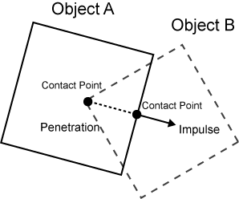

Collision Overview
Collision, in some shape or form, is at the very foundation of pretty much any physics-based game one could imagine. From detecting whether a player character is standing on a platform, to whether a bullet has hit an enemy (or the player character), or if a player has entered an area that causes behavioral changes, collision is absolutely integral to a great majority of games.
In Zero collision happens in two phases, detection and the subsequent resolution of any two Colliders that intersect each other. Zero provides a number of different Colliders that can be used in both 2D and 3D projects, events that provide a wealth of data from collisions that take place, and CollisionGroup and CollisionTable resources for defining whether to detect or resolve collision between specific selections of objects. The RigidBody component is also integral to collision when it is used.
Colliders
Zero provides a number of different Colliders (in the form of components that are attached to objects), all of which inherit from the Collider base class. That is, all the subsequent Colliders contain at least the properties and methods of the base Collider class. The following is a list of all the Collider components currently available in Zero Engine along with links to their respective Manual pages.
- BoxCollider
- A rectangular-shaped box that scales with the object it is attached to.
- SphereCollider
- A perfect sphere that retains its spherical shape even if the object it is attached to is non-uniformly scaled.
- CylinderCollider
- A cylinder defined by a radius and height.
- EllipsoidCollider
- An ellipsoid defined by three different radii. To be used with a non-uniformly scaled sphere instead of SphereCollider.
- CapsuleCollider
- A capsule that is compromised of a cylinder and two half-spheres (one on either end of the cylinder), defined by a radius, height, and direction.
- MeshCollider
- A custom Collider created from a
Meshspecified in thePhysicsMeshproperty. To be used only with static objects.
- A custom Collider created from a
- ConvexMeshCollider
- A custom Collider created from a
ConvexMeshspecified in theConvexMeshproperty. To be used with objects that are entirely convex or very nearly convex. Objects may be dynamic using this Collider.
- A custom Collider created from a
- MultiConvexMeshCollider
- A custom Collider that created from multiple convex mesh, created by the Multi Convex Mesh Editor. The Multi Convex Mesh Editor currently only works with
Sprites
- A custom Collider that created from multiple convex mesh, created by the Multi Convex Mesh Editor. The Multi Convex Mesh Editor currently only works with
- HeightMapCollider
- A custom Collider that provides collision for a
HeightMap.
- A custom Collider that provides collision for a
Events
Collision events provide the user with data based on a detected collision. There are there multiple types of CollisionEvents:
- CollisionEvent
- There are three CollisionEvents:
- CollisionStarted
- CollisionPersisted
- CollisionEnded
- CollisionEvents are sent will be received by any Colliders despite their CollisionGroup.
- There are three CollisionEvents:
- CollisionGroupEvent
- There are three
CollisionGroupEvents:- GroupCollisionStarted
- GroupCollisionPersisted
- GroupCollisionEnded
- GroupCollisionEvents are used in concert with Collision Groups and Collision Tables.
- There are three
- CollisionPreSolveEvent
- There is one
PreSolveEvent:- CollisionGroupPreSolve
- This event is sent after detection–but before resolution–so that the user may do or change something before resolution.
- There is one
CollisionGroup and CollisionTable
These two resources work in concert with each other to determine how certain Colliders, when assigned to different CollisionGroups, should act. Each CollisionGroup pairing (including those Colliders that belong to the same CollisionGroup) is assigned a filter on a CollisionTable. Each filter has a CollisionFlag property that can be set to either Resolve, Skip Resolution, or SkipDetection. In addition to changing CollisionFlag, the user may add Collision Filter Blocks to enable CollisionGroupEvents. The following bulleted list shows the basic layout of these resources and components:
- CollisionGroup - The user will usually wish to start by making CollisionGroups for each group in which they find the need for a specific, non-default collision behavior.
- CollisionTable - The user will want to make this resource once they are ready to start setting the CollisionFilters for each CollisionGroup pairing (all of which are represented on the table itself)
- CollisionFilter - These are the individual elements that make up the CollisionTable; there is one filter for each CollisionGroup pairing.
- CollisionFlag - This a property of CollisionFilter, allowing the user to change whether the CollisionGroup pairing should
Resolve,Skip Resolution, orSkip Detection. - Collision Filter Block - Collision Filter Blocks are added onto to the CollisionFilter to control which objects receive the event specified by the block (Start, Persisted, End, or PreSolve).
- CollisionFlag - This a property of CollisionFilter, allowing the user to change whether the CollisionGroup pairing should
- CollisionFilter - These are the individual elements that make up the CollisionTable; there is one filter for each CollisionGroup pairing.
RigidBody
The RigidBody component is integral to the functioning of Colliders in most situations. One property in particular, DynamicState, which defines whether the object is Static, Kinematic, or Dynamic, has large implications for the behavior of the Collider component attached to the same object. To learn about each of these states in more detail, see the appropriate section of the RigidBody Manual page. The primary difference each of these states makes is in how collision is detected and/or resolved based on the DynamicState of each RigidBody.
Collision Detection and Resolution-
There are a number of elements in the overarching Collision system that rely on the distinctions between collision detection, collision resolution, and skipping either one or both. The following list will define exactly what each means:
- Collision Detection
- Detection always happens before resolution, but is not dependant upon resolution. Detection occurs when two Colliders overlap. This generates a
ContactPointto be sent to each object. ContactPoints are defined as the deepest penetrating point on one object and a point on the surface of the other object. Detection provides crucial information about the collision while resolution brings about a change to the objects involve.
- Detection always happens before resolution, but is not dependant upon resolution. Detection occurs when two Colliders overlap. This generates a
- Collision Resolution
- Resolution happens as a result of detection. If no collision is detected, there is nothing to resolve. If collision is detected, an impulse is applied along the normal of collision. The Impulse is calculated based off the velocities and mases of the bodies involved in the collision.
The following diagram illustrates the elements in play during collision detection and resolution:

The following list defines each part that is labeled in the diagram above:
- Contact Point
- The points on Object A and Object B where collision was first detected.
- Normal
- The direction on which the impulse is applied to resolve collision.
- Penetration
- The distance between the contact point on A and the contact point on B along the normal.
- Impulse
- A scalar applied to the normal of the object so that the relative velocity between Object A and Object B is 0. If factors such as restitution (bounciness) or angular velocity are also set to 0, the objects will come to a complete stop upon resolution.